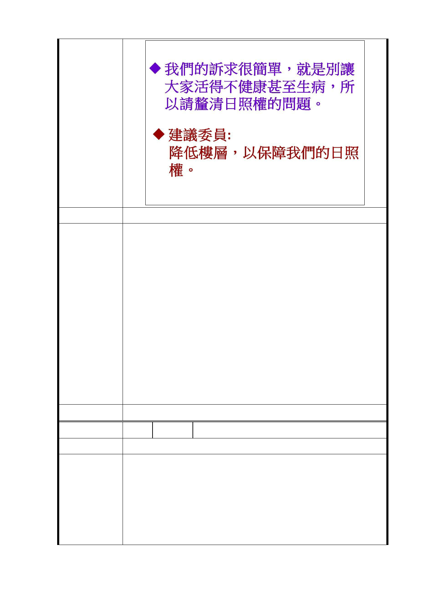

建議辦法
一、 廣慈博愛園區現址係以提高整體公共利益為規劃考
量，全區變更為特定專用區，除提供現有都市計畫之
服務機能外，將檢討留設未來信義區公所搬遷所需之
辦公空間，並整體規劃留設公共開放空間，使其發展
為結合社會福利設施、公共住宅、警政、辦公、鄰里
商業及公共交通轉乘服務等之複合式公共服務特定專
市府回覆
用區。
意 見 二、 依 104 年 7 月 9 日「臺北市都市設計及土地使用開發
許可審議委員會」審議通過之都市設計準則，基地北
側應退縮留設 60 公尺帶狀開放空間，基地中心地帶應
留設寬度 20 公尺之南北向帶狀開放空間，以維整體都
市景觀及視覺穿透性，並保障林口街 80 巷北側街廓住
戶之日照權。
三、 受保護樹木、樹群部分如編號 5。
委 員 會 決 議 同編號 1
編 號 13 陳情人 李○陸
陳 情 理 由 台北市信義區廣慈博愛園區應做為信義區第二座防災公園。
我們反對這塊土地進行任何型態的開發，廣慈博愛園區
應做為信義區第二座防災公園，擴大信義區防災公園面積。
建議辦法
以防災角度看，信義區缺乏大型防災公園。南港區有南
港公園，大安區有大安公園，台灣為地震多發帶，萬一類似
921 大地震發生或核災時，里民區民該躲哪裡去？ (松德防
災公園是北市區最小型的防災公園 面積僅10,767 平方
- 26 -